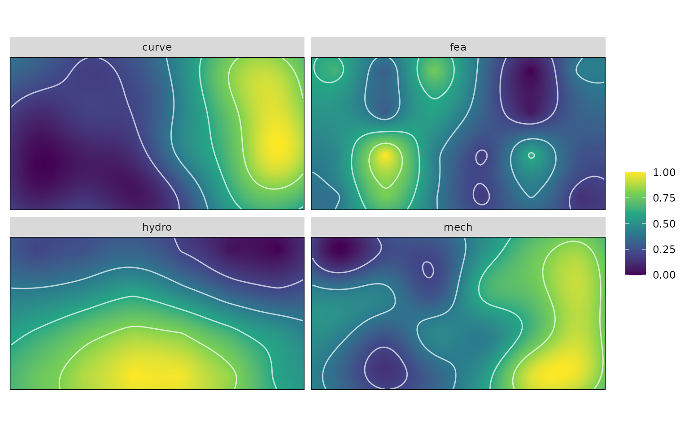
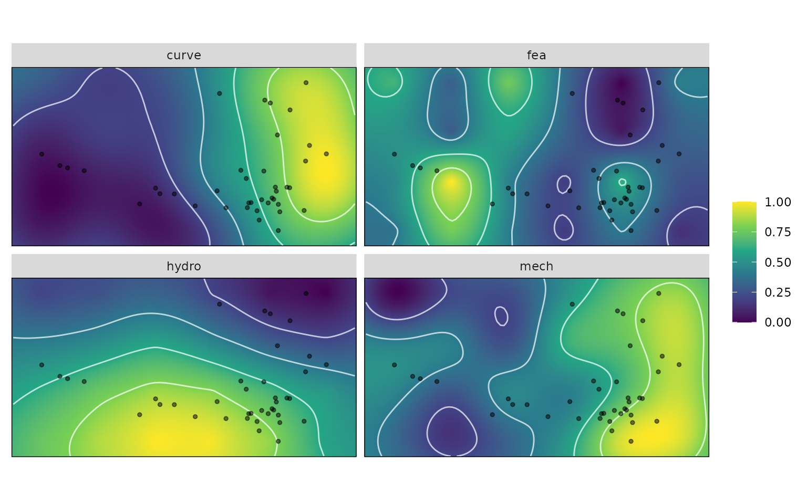
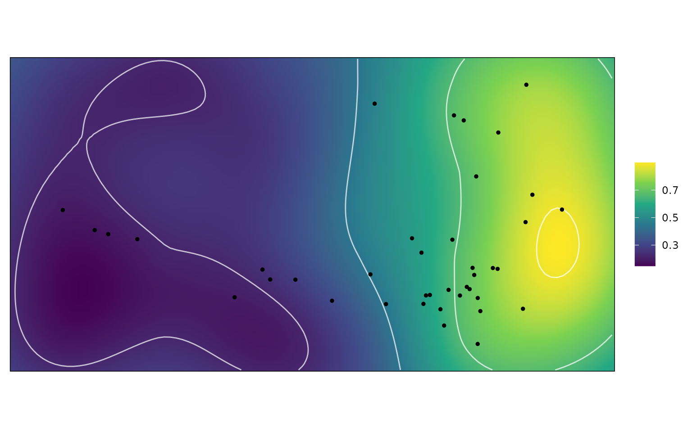

Morphoscape
Morphoscape.RmdThe following provides a guide on the workflow of performing an adaptive landscape analysis, from the philosophies of morphospaces, and types of data required, to the details of how to use the functions in this “Morphoscape” package. This guide will cover the following topics:
1. Defining a Morphospace
- Phenotype
- Performance data: Specimens or Warps
2. Using Morphoscape
- Creating Performance Surfaces
- Calculate LandscapesDefining a morphospace
Phenotype
Adaptive landscape analyses require two types of data to be married together: phenotypic data and performance data. Phenotype data can take many forms, and the only requirement of phenotype data to the construction of adaptive landscapes is the definition of a morphospace. The simplest type of morphospace can be a 2D plot with the axes defined by two numeric measurements of phenotype, such as the length and width of a skull, though any quantification of phenotype is valid.
Geometric morphometrics has become the quintessential method for quantifying detailed shape variation in bony structures, and the final outcome in many studies is the visualization of a PCA of shape variation - which is a morphospace. However, how one defines the morphospace can drastically impact the outcomes of these adaptive landscape analyses. A PCA and between-group PCA are both valid methods to ordinate morphological data, yet will produce dramatically different morphospaces depending on the goals of the analysis. PCA will produce a (largely) unbiased ordination of the major axes of variation, while bgPCA will find axes of variation that maximize differences in groups. Caution should be applied when using constrained ordination like bgPCA, as they can create ecological patterns where none may actually exist (see Bookstein 2019, Cardini et al 2019 and Cardini & Polly 2020 for the cautionary debate). However, in many ways bgPCA, or other constrained ordinations are ideal for questions regarding functional and adaptive differences between ecological groups when actual morphological differences are present.
For now the adaptive landscape methods in this package are limited to 2D morphospaces, with two axes of phenotypic variation. This largely done out of the complexities involved in analyzing and visualizing multivariate covariance in more than 3 dimensions. However, if more than two axes of phenotypic variation are desired to be analyzed, these can be done in separate analyses.
Collecting performance data: Specimens or Warps
Once an ordination and 2D morphospace of the phenotypic data is defined, one must then collect data on performance of these phenotypes. There are two approaches one can take to collecting performance data: collect data directly from specimens, or collect data from phenotypic warps in morphospace. The former is the simplest and most direct as long as your dataset is not too large, and allows you to to know actual performance of actual specimens. However, error can creep in if the performance traits do not strongly covary with the axes of your morphospace, and can produce uneven and inconsistent surfaces. In addition, specimens may not evenly occupy morphospace resulting in regions of morphospace not defined by existing phenotypes, and thus will not have measured performance data and may produce erroneous interpolations or extrapolations of performance. Finally, collecting performance data can be time consuming, and may be impractical for extremely large datasets.
The alternative is to collect performance data from hypothetical
warps across morphospace, which eliminates these issues. As long as the
method used to define your morphospace is reversible (such as
prcomp, geomorph::gm.prcomp,
Morpho::prcompfast, Morpho::groupPCA,
Morpho::CVA), it is possible to extract the phenotype at
any location in morphospace. In fact many of these ordination functions
come with predict methods for this very task. As such,
using prediction, it is possible to define phenotypes evenly across all
of morphospace called warps. These warps are also useful in they can be
defined to represent phenotypic variation for ONLY the axes of the
morphospace, and ignore variation in other axes. These warps can however
form biologically impossible phenotypes (such as the walls of a bone
crossing over one another), which may or may not help your
interpretations of why regions of morphospace might be occupied or
not.
Both these approaches are valid as long as morphospace is reasonably well covered. For an in-depth analysis of morphospace sampling see Smith et al (2021).
This package comes with the turtle humerus dataset from Dickson and Pierce (2019), which uses performance data collected from warps.
data("turtles")
data("warps")
str(turtles)
#> 'data.frame': 40 obs. of 4 variables:
#> $ x : num 0.03486 -0.07419 -0.07846 0.00972 -0.00997 ...
#> $ y : num -0.019928 -0.015796 -0.010289 -0.000904 -0.029465 ...
#> $ Group : chr "freshwater" "softshell" "softshell" "freshwater" ...
#> $ Ecology: chr "S" "S" "S" "S" ...
str(warps)
#> 'data.frame': 24 obs. of 6 variables:
#> $ x : num -0.189 -0.189 -0.189 -0.189 -0.134 ...
#> $ y : num -0.05161 -0.00363 0.04435 0.09233 -0.05161 ...
#> $ hydro: num -1839 -1962 -2089 -2371 -1754 ...
#> $ curve: num 8.07 6.3 9.7 15.44 10.21 ...
#> $ mech : num 0.185 0.193 0.191 0.161 0.171 ...
#> $ fea : num -0.15516 -0.06215 -0.00435 0.14399 0.28171 ...turtles is a dataset of coordinate data for 40 turtle
humerus specimens that have been ordinated in a bgPCA morphospace, the
first two axes maximizing the differences between three ecological
groups: Marine, Freshwater and Terrestrial turtles. This dataset also
includes these and other ecological groupings.
warps is a dataset of 4x6 evenly spaced warps predicted
from this morphospace and 4 performance metrics.
Using Morphoscape
Once a morphospace is defined and performance data collected, the
workflow of using Morphoscape is fairly straightforward. Using the
warp and turtles datasets the first step is to
make a functional dataframe using as_fnc_df(). The input to
this function is a dataframe containing both coordinate data and
performance data (and also grouping factors if desired). The first two
columns must be coordinates, while the other columns can be defined as
performance data, or as grouping factors. It is best to have your
performance data named at this point to keep track.
library(Morphoscape)
data("turtles")
data("warps")
str(turtles)
#> 'data.frame': 40 obs. of 4 variables:
#> $ x : num 0.03486 -0.07419 -0.07846 0.00972 -0.00997 ...
#> $ y : num -0.019928 -0.015796 -0.010289 -0.000904 -0.029465 ...
#> $ Group : chr "freshwater" "softshell" "softshell" "freshwater" ...
#> $ Ecology: chr "S" "S" "S" "S" ...
str(warps)
#> 'data.frame': 24 obs. of 6 variables:
#> $ x : num -0.189 -0.189 -0.189 -0.189 -0.134 ...
#> $ y : num -0.05161 -0.00363 0.04435 0.09233 -0.05161 ...
#> $ hydro: num -1839 -1962 -2089 -2371 -1754 ...
#> $ curve: num 8.07 6.3 9.7 15.44 10.21 ...
#> $ mech : num 0.185 0.193 0.191 0.161 0.171 ...
#> $ fea : num -0.15516 -0.06215 -0.00435 0.14399 0.28171 ...
# Create an fnc_df object for downstream use
warps_fnc <- as_fnc_df(warps, func.names = c("hydro", "curve", "mech", "fea"))
str(warps_fnc)
#> Classes 'fnc_df' and 'data.frame': 24 obs. of 6 variables:
#> $ x : num -0.189 -0.189 -0.189 -0.189 -0.134 ...
#> $ y : num -0.05161 -0.00363 0.04435 0.09233 -0.05161 ...
#> $ hydro: num 0.763 0.627 0.487 0.174 0.858 ...
#> $ curve: num 0.0544 0 0.1045 0.281 0.1202 ...
#> $ mech : num 0.359 0.473 0.446 0 0.149 ...
#> $ fea : num 0.372 0.458 0.512 0.65 0.777 ...
#> - attr(*, "func.names")= chr [1:4] "hydro" "curve" "mech" "fea"Creating Performance Surfaces
It is then a simple process to perform surface interpolation by
automatic Kriging using the krige_surf() function. This
will autofit a kriging function to the data. This is performed by the
automap::autoKrige() function. For details on the fitting
of variograms you should read the documentation of automap.
All the autoKrige fitting data is kept in the
kriged_surfaces object along with the output surface.
By default the krige_surf() function will interpolate
within an alpha hull wrapped around the inputted datapoints. This is to
avoid extrapolation beyond measured datapoints. This can be defined
using the resample_grid() function, which will supply a
grid object defining the points to interpolate, and optionally plot the
area to be reconstructed. The strength of wrapping can be controlled
using the alpha argument, with smaller values producing a
stronger wrapping.
# Create alpha-hulled grid for kriging
grid <- resample_grid(warps, hull = "concaveman", alpha = 3, plot = TRUE)
kr_surf <- krige_surf(warps_fnc, grid = grid)
#> [using ordinary kriging]
#> [using ordinary kriging]
#> [using ordinary kriging]
#> [using ordinary kriging]
kr_surf
#> A kriged_surfaces object
#> - functional characteristics:
#> hydro, curve, mech, fea
#> - surface size:
#> 70 by 70
#> α-hull applied (α = 3)
#> - original data:
#> 24 rows
plot(kr_surf)However, if one wishes to also extrapolate to the full extent of
morphospace, set hull = NULL. Because the
warps dataset evenly samples morphospace, we can set
hull = NULL and reconstruct the full rectangle of
morphospace. When hull = NULL an amount of padding will
also be applied to provide some space beyond the supplied datapoints and
can be controlled using the padding argument. Finally, we
can also specify the density of interpolated points using the
resample argument.
# Create alpha-hulled grid for kriging
grid <- resample_grid(warps, hull = NULL, padding = 1.1)
# Do the kriging on the grid
kr_surf <- krige_surf(warps_fnc, grid = grid)
#> [using ordinary kriging]
#> [using ordinary kriging]
#> [using ordinary kriging]
#> [using ordinary kriging]
kr_surf
#> A kriged_surfaces object
#> - functional characteristics:
#> hydro, curve, mech, fea
#> - surface size:
#> 100 by 100
#> - original data:
#> 24 rows
plot(kr_surf)
This reconstructed surface is missing actual specimen data points
with associated ecological groupings, which are needed for later
analyses. These can be added using the krige_new_data()
function.
# Do kriging on the sample dataset
kr_surf <- krige_new_data(kr_surf, new_data = turtles)
#> [using ordinary kriging]
#> [using ordinary kriging]
#> [using ordinary kriging]
#> [using ordinary kriging]
kr_surf
#> A kriged_surfaces object
#> - functional characteristics:
#> hydro, curve, mech, fea
#> - surface size:
#> 100 by 100
#> - original data:
#> 24 rows
#> - new data:
#> 40 rows
plot(kr_surf)This of course all can all be done in one step.
krige_surf will automatically call
resample_grid() if no grid argument is
supplied, and new_data can be supplied as the data by which
later group optimums are calculated against.
# Above steps all in one:
kr_surf <- krige_surf(warps_fnc, hull = NULL, padding = 1.1,
new_data = turtles)
#> [using ordinary kriging]
#> [using ordinary kriging]
#> [using ordinary kriging]
#> [using ordinary kriging]
#> [using ordinary kriging]
#> [using ordinary kriging]
#> [using ordinary kriging]
#> [using ordinary kriging]
kr_surf
#> A kriged_surfaces object
#> - functional characteristics:
#> hydro, curve, mech, fea
#> - surface size:
#> 100 by 100
#> - original data:
#> 24 rows
#> - new data:
#> 40 rows
plot(kr_surf)
Calculate Landscapes
The next step is to calculate a distribution of adaptive landscapes.
Each adaptive landscape is constructed as the summation of the
performance surfaces in differing magnitudes, Each performance surface
is multiplied by a weight ranging from 0-1, and the total sum of weights
is equal to 1. For four equally weighted performance surfaces, the
weights would be the vector c(0.25, 0.25, 0.25, 0.25). To
generate a distribution of different combinations of these weights, use
the generate_weights() function.
generate_weights must have either a step or
n argument to determine how many allocations to generate,
and nvar the number of variables. One can also provide
either the fnc_df or kr_surf objects to the
data argument. step determines the step size
between weight values. step = 0.1 will generate a vectors
of c(0, 0.1, 0.2 ... 1). Alternatively, one can set the
number of values in the sequence set. n = 10 will generate
the same vectors of c(0, 0.1, 0.2 ... 1). The function will
then generate all combinations of nvar variables that sum
to 1.
For four variables, this will produce 286 combinations. A step size
of 0.05 will produce 1771 rows. As the step size gets smaller, and the
number of variables increases, the number of output rows will
exponentially increase. It is recommended to start with large
step sizes, or small n to ensure things are
working correctly.
# Generate weights to search for optimal landscapes
weights <- generate_weights(n = 10, nvar = 4)
#> 286 rows generated
weights <- generate_weights(step = 0.05 , data = kr_surf)
#> 1771 rows generatedThis weights matrix is then provided to the
calc_all_landscapes() along with the kr_surf
object to calculate the landscapes for each set of weights. For
calculations with a large number of weights, outputs can take some time
and can be very large in size, and it is recommended to utilize the
file argument to save the output to file.
# Calculate all landscapes; setting verbose = TRUE produces
# a progress bar
all_landscapes <- calc_all_lscps(kr_surf, grid_weights = weights)With a distribution of landscapes, it is now possible to find
landscapes that maximize ‘fitness’ for a given subset or group of your
specimens in new_data using the calcWprimeBy()
function. The by argument sets the grouping variable for
the data provided in new_data from earlier. There are
several ways by can be set: A one sided formula containing
the name of a column in new_data or a vector containing a
factor variable.
# Calculate optimal landscapes by Group
table(turtles$Ecology)
#>
#> M S T
#> 4 29 7
wprime_by_Group <- calcWprimeBy(all_landscapes, by = ~Ecology)
wprime_by_Group <- calcWprimeBy(all_landscapes, by = turtles$Ecology)
wprime_by_Group
#> - turtles$Ecology == "M"
#>
#> Optimal weights:
#> Weight SE SD Min. Max.
#> hydro 0.104167 0.029167 0.10104 0.0 0.30
#> curve 0.008333 0.005618 0.01946 0.0 0.05
#> mech 0.012500 0.006528 0.02261 0.0 0.05
#> fea 0.875000 0.025746 0.08919 0.7 1.00
#>
#> Average fitness value at optimal weights:
#> Value SE SD Min. Max.
#> Z 0.7612 0.004671 0.01618 0.7437 0.7927
#> -----------------------------------------
#> - turtles$Ecology == "S"
#>
#> Optimal weights:
#> Weight SE SD Min. Max.
#> hydro 0.85469 0.009878 0.05588 0.8 1.00
#> curve 0.05312 0.010025 0.05671 0.0 0.20
#> mech 0.05312 0.010025 0.05671 0.0 0.20
#> fea 0.03906 0.007691 0.04350 0.0 0.15
#>
#> Average fitness value at optimal weights:
#> Value SE SD Min. Max.
#> Z 0.7491 0.002325 0.01315 0.7326 0.7835
#> -----------------------------------------
#> - turtles$Ecology == "T"
#>
#> Optimal weights:
#> Weight SE SD Min. Max.
#> hydro 0.0125 0.00559 0.02236 0.00 0.05
#> curve 0.8500 0.02415 0.09661 0.65 1.00
#> mech 0.1250 0.02661 0.10646 0.00 0.35
#> fea 0.0125 0.00559 0.02236 0.00 0.05
#>
#> Average fitness value at optimal weights:
#> Value SE SD Min. Max.
#> Z 0.7538 0.003712 0.01485 0.736 0.7852
#>
#> - method: chi-squared, quantile = 0.05
summary(wprime_by_Group)
#> Optimal weights by turtles$Ecology:
#> W_hydro W_curve W_mech W_fea Z
#> M 0.104167 0.008333 0.012500 0.875000 0.761245
#> S 0.854688 0.053125 0.053125 0.039062 0.749055
#> T 0.012500 0.850000 0.125000 0.012500 0.753825
plot(wprime_by_Group, ncol = 2)It is also possible to use calcGrpWprime to enumerate a
single group or for the entire sample:
# Calculate landscapes for one Group at a time
i <- which(turtles$Ecology == "T")
wprime_T <- calcGrpWprime(all_landscapes, index = i)
wprime_T
#> Optimal weights:
#> Weight SE SD Min. Max.
#> hydro 0.0125 0.00559 0.02236 0.00 0.05
#> curve 0.8500 0.02415 0.09661 0.65 1.00
#> mech 0.1250 0.02661 0.10646 0.00 0.35
#> fea 0.0125 0.00559 0.02236 0.00 0.05
#>
#> Average fitness value at optimal weights:
#> Value SE SD Min. Max.
#> Z 0.7538 0.003712 0.01485 0.736 0.7852
#>
#> - method: chi-squared, quantile = 0.05
wprime_b <- calcGrpWprime(all_landscapes, Group == "box turtle")
wprime_b
#> Optimal weights:
#> Weight SE SD Min. Max.
#> hydro 0.01944 0.007162 0.03038 0.0 0.1
#> curve 0.86944 0.018140 0.07696 0.7 1.0
#> mech 0.09167 0.021862 0.09275 0.0 0.3
#> fea 0.01944 0.007162 0.03038 0.0 0.1
#>
#> Average fitness value at optimal weights:
#> Value SE SD Min. Max.
#> Z 0.7746 0.003492 0.01482 0.7565 0.8073
#>
#> - method: chi-squared, quantile = 0.05
plot(wprime_b)
wprime_all <- calcGrpWprime(all_landscapes)
wprime_all
#> Optimal weights:
#> Weight SE SD Min. Max.
#> hydro 0.74853 0.008797 0.08885 0.6 1.00
#> curve 0.10735 0.009984 0.10084 0.0 0.40
#> mech 0.08578 0.008342 0.08425 0.0 0.35
#> fea 0.05833 0.006156 0.06217 0.0 0.25
#>
#> Average fitness value at optimal weights:
#> Value SE SD Min. Max.
#> Z 0.6343 0.001179 0.01191 0.6193 0.67
#>
#> - method: chi-squared, quantile = 0.05Finally, it is possible to compare the landscapes for each group
using calcGrpWprime(). This is done by comparing the number
of landscape combinations are shared by the upper percentile between
groups.
# Test for differences between Group landscapes
tests <- multi.lands.grp.test(wprime_by_Group)
tests
#> Pairwise landscape group tests
#> - method: chi-squared | quantile: 0.05
#>
#> Results:
#> M S T
#> M - 0 0
#> S 0 - 0
#> T 0 0 -
#> (lower triangle: p-values | upper triangle: number of matches)
# Calculate landscapes for one Group at a time
wprime_b <- calcGrpWprime(all_landscapes, Group == "box turtle")
wprime_b
#> Optimal weights:
#> Weight SE SD Min. Max.
#> hydro 0.01944 0.007162 0.03038 0.0 0.1
#> curve 0.86944 0.018140 0.07696 0.7 1.0
#> mech 0.09167 0.021862 0.09275 0.0 0.3
#> fea 0.01944 0.007162 0.03038 0.0 0.1
#>
#> Average fitness value at optimal weights:
#> Value SE SD Min. Max.
#> Z 0.7746 0.003492 0.01482 0.7565 0.8073
#>
#> - method: chi-squared, quantile = 0.05
wprime_t <- calcGrpWprime(all_landscapes, Group == "tortoise")
wprime_t
#> Optimal weights:
#> Weight SE SD Min. Max.
#> hydro 0.01176 0.005302 0.02186 0.00 0.05
#> curve 0.85294 0.022877 0.09432 0.65 1.00
#> mech 0.11765 0.026059 0.10744 0.00 0.35
#> fea 0.01765 0.007353 0.03032 0.00 0.10
#>
#> Average fitness value at optimal weights:
#> Value SE SD Min. Max.
#> Z 0.7008 0.003571 0.01472 0.6829 0.7325
#>
#> - method: chi-squared, quantile = 0.05
# Test for differences between Group landscapes
lands.grp.test(wprime_b, wprime_t)
#> Landscape group test
#> - method: chi-squared | quantile: 0.05
#>
#> Number of matches: 16
#> P-value: 0.8889References
Bookstein, F. L. (2019). Pathologies of between-groups principal components analysis in geometric morphometrics. Evolutionary Biology, 46(4), 271-302.
Cardini, A., O’Higgins, P., & Rohlf, F. J. (2019). Seeing distinct groups where there are none: spurious patterns from between-group PCA. Evolutionary Biology, 46(4), 303-316.
Cardini, A., & Polly, P. D. (2020). Cross-validated between group PCA scatterplots: A solution to spurious group separation?. Evolutionary Biology, 47(1), 85-95.
Dickson, B. V., & Pierce, S. E. (2019). Functional performance of turtle humerus shape across an ecological adaptive landscape. Evolution, 73(6), 1265-1277.
Smith, S. M., Stayton, C. T., & Angielczyk, K. D. (2021). How many trees to see the forest? Assessing the effects of morphospace coverage and sample size in performance surface analysis. Methods in Ecology and Evolution, 12(8), 1411-1424.